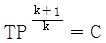
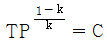
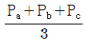
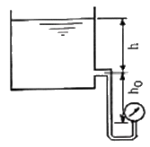

에너지관리산업기사 (2019-04-27 기출문제)
1과목: 열역학 및 연소관리
1. 노 앞과 연돌하부에 송풍기를 두어 노 내압을 대기압보다 약간 낮게 조절한 통풍방식은?
- 압입통풍
- 흡입통풍
- 간접통풍
- 평형통풍
(정답률: 65%)

2. 탱크 내에 900 kPa의 공기 20kg이 충전되어 있다. 공기 1kg을 뺄 때 탱크 내 공기온도가 일정하다면 탱크 내 공기압력(kPa)은?
- 655
- 755
- 855
- 900
(정답률: 71%)
3. 고체연료의 일반적인 주성분은 무엇인가?
- 나트륨
- 질소
- 유황
- 탄소
(정답률: 86%)
4. 이상기체의 가역 단열과정에서 절대온도 T와 압력 P의 관계식으로 옳은 것은? (단, 비열비 k = Cp / Cv 이다.)
- TPk-1 = C
- TPk = C


(정답률: 68%)
5. 몰리에르 선도로부터 파악하기 어려운 것은?
- 포화수의 엔탈피
- 과열증기의 과열도
- 포화증기의 엔탈피
- 과열증기의 단열팽창 후 상대습도
(정답률: 81%)
6. 절대온도 293 K는 섭씨온도로 얼마인가?
- -20℃
- 0℃
- 20℃
- 566℃
(정답률: 82%)
7. 정압비열 5 kJ/kg·K의 기체 10kg을 압력을 일정하게 유지하면서 20℃에서 30℃까지 가열하기 위해 필요한 열량(kJ)은?
- 400
- 500
- 600
- 700
(정답률: 67%)
8. 비중이 0.8인 액체의 압력이 2 kg/cm2 일 때, 액체의 양정(m)은?
- 4
- 16
- 20
- 25
(정답률: 46%)
9. 다음 중 건식 집진장치에 해당하지 않는 것은?
- 백 필터
- 사이클론
- 벤튜리 스크레버
- 멀티클론
(정답률: 77%)
10. 증기 동력사이클의 효율을 높이는 방법이 아닌 것은?
- 과열기를 설치한다.
- 재생사이클을 사용한다.
- 증기의 공급온도를 높인다.
- 복수기의 압력을 높인다.
(정답률: 69%)
11. 증기 축열기(steam sccumulator)의 부품이 아닌 것은?
- 증기 분사노출
- 순환동
- 증기 분배관
- 트레이
(정답률: 80%)
12. 인화점에 대한 설명으로 틀린 것은?
- 가연성 증기발생시 연소범위에 하한계에 이르는 최저온도이다.
- 점화원의 존재와 연관된다.
- 연소가 지속적으로 확산될 수 있는 최저온도이다.
- 연료의 조성, 점도, 비중에 따라 달라진다.
(정답률: 65%)
13. 카르노사이클의 과정 중 그 구성이 옳은 것은?
- 2개의 가역등온과정, 2개의 가역팽창과정
- 2개의 가역정압과정, 2개의 가역단열과정
- 2개의 가역등온과정, 2개의 가역단열과정
- 2개의 가역정압과정, 2개의 가역등온과정
(정답률: 77%)
14. 공기비(m)에 대한 설명으로 옳은 것은?
- 공기비가 크면 연소실 내의 연소온도는 높아진다.
- 공기비가 작으면 불완전연소의 가능성이 있어서 매연이 발생할 수 있다.
- 공기비가 크면 SO2, NO2 등의 함량이 감소하여 장치의 부식이 줄어든다.
- 공기비는 연료의 이론연소에 필요한 공기량을 실제연소에 사용한 공기량으로 나눈 값이다.
(정답률: 69%)
15. 액체연료의 특징에 대한 설명으로 틀린 것은?
- 액체연료는 기체연료에 비해 밀도가 크다.
- 액체연료는 고체연료에 비해 단위 질량당 발열량이 크다.
- 액체연료는 고체연료에 비해 완전 연소시키기가 어렵다.
- 액체연료는 고체연료에 비해 연소장치를 작게 할 수 있다.
(정답률: 79%)
16. 굴뚝 높이가 50m, 연소가스 평균온도가 227℃, 대기온도가 27℃ 일 때 이 굴뚝의 이론통풍력(mmH2O)은? (단, 표준상태에서 공기의 비중량은 1.29 kg/m3, 연소가스의 비중량은 1.34 kg/m3 이며, 굴뚝 내의 각종 압력손실은 무시한다.)
- 13.7
- 22.1
- 26.5
- 30.4
(정답률: 51%)
17. 압력에 관한 설명으로 옳은 것은?
- 압력은 단위면적에 작용하는 수직성분과 수평성분의 모든 힘으로 나타낸다.
- 1Pa은 1m2에 1kg의 힘이 작용하는 압력이다.
- 압력이 대기압보다 높을 경우 절대압력은 대기압과 게이지압력의 합이다.
- A, B, C 기체의 압력을 각각 Pa, Pb, Pc 라고 표현할 때 혼합기체의 압력은 평균값인

이다.
(정답률: 82%)
18. 보일러의 통풍력에 영향을 미치는 인자로 가장 거리가 먼 것은?
- 공기예열기, 댐퍼, 버너 등에서 연소가스와의 마찰저항
- 보일러 본체 전열면, 절탄기, 과열기 등에서 연소가스와의 마찰저항
- 통풍 경로에서 유로의 방향전환
- 통풍 경로에서 유로의 단면적 변화
(정답률: 55%)
19. 열역학의 기본법칙으로 일종의 에너지보존법칙과 관련된 것은?
- 열역학 제3법칙
- 열역학 제2법칙
- 열역학 제0법칙
- 열역학 제1법칙
(정답률: 82%)
20. 500℃와 0℃ 사이에서 운전되는 카르노사이클의 열효율(%)은?
- 49.9
- 64.7
- 85.6
- 99.2
(정답률: 71%)
2과목: 계측 및 에너지진단
21. 가스분석방법으로 세라믹식 O2계에 대한 설명으로 옳은 것은?
- 응답이 느리다.
- 온도조절용 전기로가 필요 없다.
- 연속측정이 가능하며 측정범위가 좁다.
- 측정가스 중에 가연성 가스가 존재하면 사용이 불가능하다.
(정답률: 62%)
22. 표준대기압(1atm)과 거리가 먼 것은?
- 1.01325 bar
- 101325 Pa
- 10.332 N/m2
- 1.033 kgf/cm2
(정답률: 62%)
23. 간접 측정식 액면계가 아닌 것은?
- 유리관식
- 방사선식
- 정전용량식
- 압력식
(정답률: 62%)
24. 유출량을 일정하게 유지하면 유입량이 증가됨에 따라 수위가 상승하여 평형을 이루지 못하는 요소는?
- 1차 지연요소
- 2차 지연요소
- 적분요소
- 낭비시간요소
(정답률: 66%)
25. 상당 증발량이 300 kg/h 이고, 급수온도가 30℃, 증기 엔탈피가 730 kcal/kg 인 보일러의 실제 증발량은 약 몇 kg/h 인가?
- 215.3
- 220.5
- 231.0
- 244.8
(정답률: 51%)
26. 다음 중 내화물의 내화도 측정에 주로 사용되는 온도계는?
- 제겔콘
- 백금저항 온도계
- 기체압력식 온도계
- 백금-백금·로듐 열전대 온도계
(정답률: 78%)
27. 다음 오차의 분류 중에서 측정자의 부주의로 생기는 오차는?
- 우연오차
- 과실오차
- 계기오차
- 계통적오차
(정답률: 83%)
28. 계통오차로서 계측기가 가지고 있는 고유의 오차는?
- 기차
- 감차
- 공차
- 정차
(정답률: 81%)
29. 2개의 제어계를 조합하여 1차 제어장치가 제어량을 측정하여 제어명령을 발하고, 2차 제어장치가 이 명령을 바탕으로 제어량을 조절하는 제어방식은?
- 비율제어
- 캐스케이드 제어
- 추종제어
- 추치제어
(정답률: 85%)
30. 도전성 유체에 자장을 형성시켜 기진력 측정에 의해 유량을 측정하는 것은?
- 전자 유량계
- 칼만식 유량계
- 델타 유량계
- 애뉼바 유량계
(정답률: 82%)
31. 보일러에서 사용하는 압력계의 최고 눈금에 대한 설명으로 옳은 것은?
- 보일러 최고사용압력의 4배 이하로 하되 2배보다 작아서는 안된다.
- 보일러 최고사용압력의 4배 이하로 하되 최고사용압력보다 작아서는 안된다.
- 보일러 최고사용압력의 3배 이하로 하되 1.5배보다 작아서는 안된다.
- 보일러 최고사용압력의 3배 이하로 하되 최고사용압력보다 작아서는 안된다.
(정답률: 76%)
32. 유량계의 종류 중 차압식이 아닌 것은?
- 오리피스
- 플로우 노즐
- 벤투리미터
- 로터미터
(정답률: 74%)
33. 아르키메데스의 부력의 원리를 이용한 액면 측정방식은?
- 차압식
- 기포식
- 편위식
- 초음파식
(정답률: 80%)
34. 자동제어방식에서 전기식 제어방식의 특징으로 옳은 것은?
- 조작력이 약하다.
- 신호의 복잡한 취급이 어렵다.
- 신호전달 지연이 있다.
- 배선이 용이하다.
(정답률: 83%)
35. 다음 그림과 같이 부착된 압력계에서 개방탱크의 액면 높이(h)는 약 몇 m 인가? (단, 액의 비중량 950 kgf/m3, 압력 2kgf/cm2, hO=10m 이다.)

- 1.1⑤
- 11.⑤
- 3.1⑤
- 31.⑤
(정답률: 66%)
36. 보일러 용량표시에 관한 설명으로 옳은 것은?
- 단위면적당 증기 발생량을 상당증발량이라 한다.
- 급수의 엔탈피를 h1(kcal/kg), 증기의 엔탈피를 h2(kcal/kg)라 할 때 증발계수 f를 계산하는 식은 539(h2-h1) 이다.
- 1시간에 15.65 kg의 증발량을 가진 능력을 1상당증발량이라 한다.
- 보일러 본체 전열면적당 단위시간에 발생하는 증발량을 증발률이라 한다.
(정답률: 47%)
37. 다음 자동제어 방법 중 피드백 제어(Feedback-control)가 아닌 것은?
- 보일러 자동제어
- 증기온도 제어
- 급수 제어
- 연소 제어
(정답률: 50%)
38. 수소(H2)가 연소되면 증기를 발생시킨다. 이 증기를 복수시키면 증발열이 발생한다. 만약 수소 1kg을 연소시켜 증기를 완전 복수시키면 얼마의 증발열을 얻을 수 있는가?
- 600 kcal
- 1800 kcal
- 5400 kcal
- 10800 kcal
(정답률: 66%)
39. 보일러 본체에서 발생한 포화증기를 같은 압력하에서 고온으로 재가열하여 수분을 증발시키고 증기의 온도를 상승시키는 장치는?
- 절탄기
- 과열기
- 축열기
- 흡수기
(정답률: 72%)
40. 휘도를 표준온도의 고온 물체와 비교하여 온도를 측정하는 온도계는?
- 액주온도계
- 광고온계
- 열전대온도계
- 기체팽창온도계
(정답률: 60%)
3과목: 열설비구조 및 시공
41. 조업방법에 따라 분류할 때 다음 중 등요(오름가마)는 어디에 속하는가?
- 불연속식요
- 반연속식요
- 연속식요
- 회전가마
(정답률: 56%)
42. 요로의 열효율을 높이는 방법으로 가장 거리가 먼 것은?
- 발열량이 높은 연료 사용
- 단열보온재 사용
- 적정 노압 유지
- 배기가스 회수장치 사용
(정답률: 55%)
43. 열전도율이 0.8kcal/m·h·℃ 인 콘크리트 벽의 안쪽과 바깥쪽의 온도가 각각 25℃와 20℃이다. 벽의 두께가 5cm 일 때 1m2당 전달되어 나가는 열량(kcal/)은?
- 0.8
- 8
- 80
- 800
(정답률: 62%)
44. 노통보일러에서 노통이 열응력에 의해서 신축이 일어나므로 노통의 신축 작용에 대처하기 위해 설치하는 이음방법은?
- 평형조인트
- 브레이징 스페이스
- 가셋 스테이
- 아담스 조인트
(정답률: 75%)
45. 검사대상기기인 보일러의 계속사용검사 중 안전검사 유효기간은? (단, 안전성향상계획과 공정안전보고서를 작성하는 경우는 제외한다.)
- 1년
- 2년
- 3년
- 4년
(정답률: 81%)
46. 다음 보온재 중 안전사용온도가 가장 낮은 것은?
- 펄라이트
- 규산칼슘
- 탄산마그네슘
- 세라믹화이버
(정답률: 54%)
47. 보온재의 구비조건으로 틀린 것은?
- 사용온도 범위에 적합해야 한다.
- 흡습, 흡수성이 커야 한다.
- 장시간 사용에도 견딜 수 있어야 한다.
- 부피, 비중이 작아야 한다.
(정답률: 82%)
48. 에너지이용 합리화법에 따른 보일러의 제조검사에 해당되는 것은?
- 용접검사
- 설치검사
- 개조검사
- 설치장소 변경검사
(정답률: 78%)
49. 내화 모르타르의 구비조건으로 틀린 것은?
- 접착성이 클 것
- 필요한 내화도를 가질 것
- 화학조성이 사용벽돌과 같을 것
- 건조, 소성에 의한 수축, 팽창이 클 것
(정답률: 80%)
50. 유량 300L/s, 양정 10m인 급수펌프의 효율이 90%이라면 소요되는 축동력(kW)은? (단, 물의 비중량은 1000 kg/m3 으로 한다.)
- 24.5
- 27.1
- 30.6
- 32.7
(정답률: 36%)
51. 다음 중 수관식 보일러에 해당하는 것은?
- 노통보일러
- 기관차형보일러
- 바브콕보일러
- 횡연관식보일러
(정답률: 71%)
52. 다음 중 탄성압력계에 해당하지 않는 것은?
- 부르동관 압력계
- 벨로즈식 압력계
- 다이어프램 압력계
- 링벨런스식 압력계
(정답률: 78%)
53. 전기적, 화학적 성질이 우수한 편이고 비중이 0.92 ~ 0.96 정도이며 약 90℃에서 연화하지만, 저온에 강하여 한랭지 배관으로 우수한 관은?
- 염화비닐관
- 석면 시멘트관
- 폴리에틸렌관
- 철근 콘크리트관
(정답률: 80%)
54. 증기와 응축수와의 비중차를 이용하는 증기트랩은?
- 버킷형
- 벨로즈형
- 디스크형
- 오리피스형
(정답률: 66%)
55. 다음 보일러 중 일반적으로 효율이 가장 좋은 것은? (단, 동일한 조건을 기준으로 한다.)
- 노통 보일러
- 연관 보일러
- 노통연관 보일러
- 입형 보일러
(정답률: 78%)
56. 보일러 사용 중 정전되었을 때 조치사항으로 적절하지 못한 것은?
- 연료공급을 멈추고 전원을 차단한다.
- 댐퍼를 열어둔다.
- 급수는 상용수위보다 약간 많을 정도로 한다.
- 급수탱크가 다른 시설과 공용으로 사용될 때에는 보일러용 이외의 급수관을 차단한다.
(정답률: 64%)
57. 액체연료 연소장치 중 고압기류식 버너의 선단부에 혼합실을 설치하고 공기, 기름 등을 혼합시킨 후 노즐에서 분사하여 무화하는 방식은?
- 내부 혼합식
- 외부 혼합식
- 무화 혼합식
- 내·외부 혼합식
(정답률: 75%)
58. 에너지이용 합리화법에 따라 보일러 설치 검사 시 가스용 보일러의 운전성능 기준 중 부하율이 90%일 때 배기가스 성분기준으로 옳은 것은?
- O2 3.7% 이하, CO2 12.7% 이상
- O2 4.0% 이하, CO2 11.0% 이상
- O2 3.7% 이하, CO2 10.0% 이상
- O2 4.0% 이하, CO2 12.7% 이상
(정답률: 58%)
59. 이음쇠 안쪽에 내장된 그래브링과 O-링에 의한 삽입식 접합으로 나사 및 용접 이음이 필요 없고 이종관과의 접합 시 커넥터 및 어댑터를 사용하여 나사이음을 하는 관은?
- 스테인리스강 이음관
- 폴리부틸렌(PB) 이음관
- 폴리에틸렌(PE) 이음관
- 열경화성 PVC 이음관
(정답률: 69%)
60. 맞대기 용접이음에서 인장하중이 2000 kgf, 강판의 두께가 6mm라 할 때 용접길이(mm)는? (단, 용접부의 허용인장응력은 7 kgf/mm2 이다.)
- 40.1
- 44.3
- 47.6
- 52.2
(정답률: 53%)
4과목: 열설비취급 및 안전관리
61. 에너지이용 합리화법에 따라 산업통상자원부장관이 냉·난방온도를 제한온도에 적합하게 유지관리하지 않은 기관에 시정조치를 명령할 때 포함되지 않는 사항은?
- 시정조치 명령의 대상 건물 및 대상자
- 시정결과 조치 내용 통지 사항
- 시정조치 명령의 사유 및 내용
- 시정기한
(정답률: 74%)
62. 다음 중 보일러 급수에 함유된 성분 중 전열면 내면 점식의 주원인이 되는 것은?
- O2
- N2
- CaSO4
- NaSO4
(정답률: 78%)
63. 스케일의 영향으로 보일러 설비에 나타나는 현상으로 가장 거리가 먼 것은?
- 전열면의 국부과열
- 배기가스 온도 저하
- 보일러의 효율 저하
- 보일러의 순환 장애
(정답률: 76%)
64. 증기난방의 응축수 환수방법 중 증기의 순환이 가장 빠른 것은?
- 기계환수식
- 진공환수식
- 단관식 중력환수식
- 복관식 중력환수식
(정답률: 81%)
65. 에너지이용 합리화법에 따르 가스사용량이 17 kg/h를 초과하는 가스용 소형 온수보일러에 대해 면제되는 검사는?
- 계속사용 안전검사
- 설치검사
- 제조검사
- 계속사용 성능검사
(정답률: 55%)
66. 보일러 가동 중 프라이밍과 포밍의 방지대책으로 틀린 것은?
- 급수처리를 하여 불순물 등을 제거한 것
- 보일러수의 농축을 방지할 것
- 과부하가 되지 않도록 운전할 것
- 고수위로 운전할 것
(정답률: 85%)
67. 보일러 운전 중 취급상의 사고에 해당되지 않는 것은?
- 압력초과
- 저수위 사고
- 급수처리 불량
- 부속장치 미비
(정답률: 82%)
68. 급수처리 방법인 기폭법에 의하여 제거되지 않는 성분은?
- 탄산가스
- 황화수소
- 산소
- 철
(정답률: 64%)
69. 에너지이용 합리화법에 따라 검사대상기기관리자에 대한 교육기간은 얼마인가?
- 1일
- 3일
- 5일
- 10일
(정답률: 79%)
70. 수관식보일러와 비교하여 노통연관식 보일러의 특징에 대한 설명으로 옳은 것은?
- 청소가 곤란하다.
- 시동하고 나서 증기 발생시간이 짧다.
- 연소실을 자유로운 형상으로 만들 수 있다.
- 파열시 더욱 위험하다.
(정답률: 57%)
71. 에너지이용 합리화법에 따라 용접검사신청서 제출 시 첨부하여야 할 서류가 아닌 것은?
- 용접 부위도
- 검사대상기기의 설계도면
- 검사대상기기의 강도계산서
- 비파괴시험성적서
(정답률: 70%)
72. 보일러에서 산 세정 작업이 끝난 후 중화처리를 한다. 다음 중 중화처리 약품으로 사용할 수 있는 것은?
- 가성소다
- 염화나트륨
- 염화마그네슘
- 염화칼슘
(정답률: 75%)
73. 에너지이용 합리화법에 따라 에너지저장의무 부과대상자로 가장 거리가 먼 것은?
- 전기사업자
- 석탄가공업자
- 도시가스사업자
- 원자력사업자
(정답률: 77%)
74. 에너지이용 합리화법에 따라 검사대상기기 적용범위에 해당하는 소형 온수보일러는?
- 전기 및 유류겸용 소형 온수보일러
- 유류를 연료로 쓰는 가정용 소형 온수보일러
- 최고사용압력이 0.1 MPa 이하이고, 전열면적이 5m2 이하인 소형 온수보일러
- 가스 사용량이 17 kg/h를 초과하는 소형 온수보일러
(정답률: 78%)
75. 사고의 원인 중 간접원인에 해당되지 않는 것은?
- 기술적 원인
- 관리적 원인
- 인적 원인
- 교육적 원인
(정답률: 71%)
76. 다음 보일러의 외부청소 방법 중 압축공기와 모래를 분사하는 방법은?
- 샌드 블라스트법
- 스틸 쇼트 크리닝법
- 스팀 쇼킹법
- 에어 쇼킹법
(정답률: 86%)
77. 에너지이용 합리화법에 따라 산업통상자원부장관 또는 시·도지사의 업무 중 한국에너지공단에 위탁된 업무에 해당하는 것은?
- 특정열사용기자재의 시공업 등록
- 과태료의 부과·징수
- 에너지절약 전문기업의 등록
- 에너지관리대상자의 신고 접수
(정답률: 64%)
78. 온수난방에서 방열기 내 온수의 평균온도가 85℃, 실내온도가 20℃, 방열계수가 7.2 kcal/m2·h·℃ 이라면, 이 방열기의 방열량(kcal/m2·h)은?
- 468
- 472
- 496
- 592
(정답률: 50%)
79. 포밍과 프라이밍이 발생했을 때 나타나는 현상으로 가장 거리가 먼 것은?
- 캐리오버 현상이 발생한다.
- 수격작용이 발생한다.
- 수면계의 수위 확인이 곤란하다.
- 수위가 급히 올라가고 고수위 사고의 위험이 있다.
(정답률: 62%)
80. 보일러 급수처리의 목적으로 가장 거리가 먼 것은?
- 스케일 생성 및 고착 방지
- 부식 발생 방지
- 가성취화 발생 감소
- 배관 중의 응축수 생성 방지
(정답률: 57%)